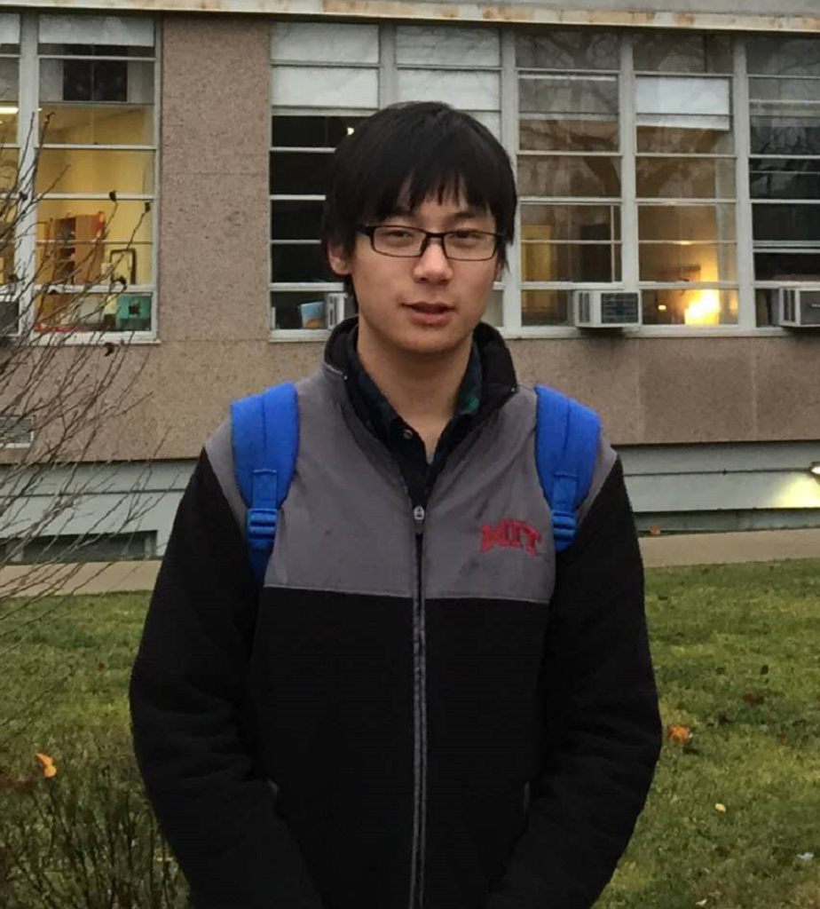

潘峰
报告题目：Contracting Arbitrary Tensor Networks: General Approximate Algorithm and Applications in Graphical Models and Quantum Circuit Simulations
报告摘要：We present a general method for approximately contracting tensor networks with an arbitrary connectivity. This enables us to release the computational power of tensor networks to wide use in inference and learning problems defined on general graphs. We show applications of our algorithm in graphical models, specifically on estimating free energy of spin glasses defined on various of graphs, where our method largely outperforms existing algorithms, including the mean-field methods and the recently proposed neural-network-based methods. We further apply our method to the simulation of random quantum circuits and demonstrate that, with a trade-off of negligible truncation errors, our method is able to simulate large quantum circuits that are out of reach of the state-of-the-art simulation methods.
专家简介：潘峰，本科毕业于南京航空航天大学，获物理与数学双学位。目前就读于中国科学院理论物理研究所，博士二年级，导师为张潘研究员。研究兴趣为统计推断、自旋玻璃理论和张量网络算法。